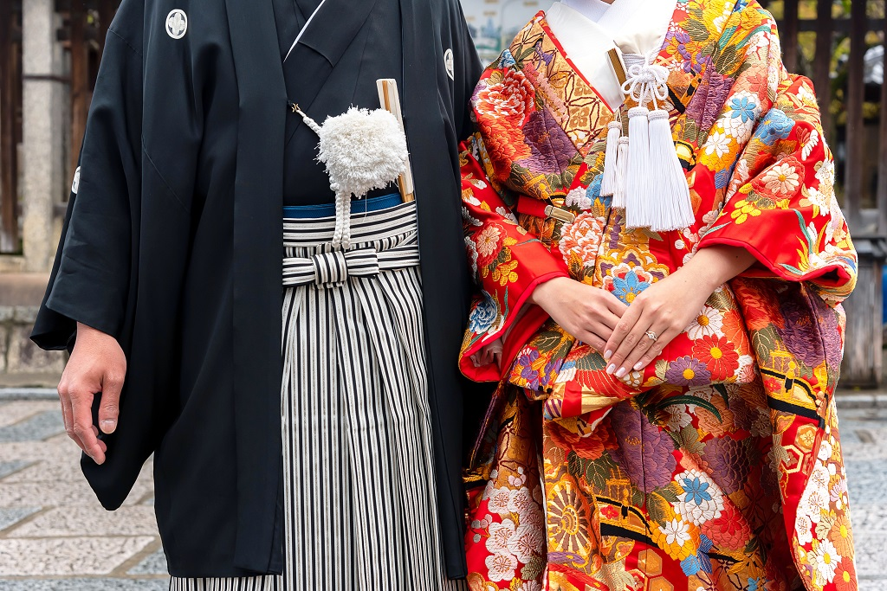
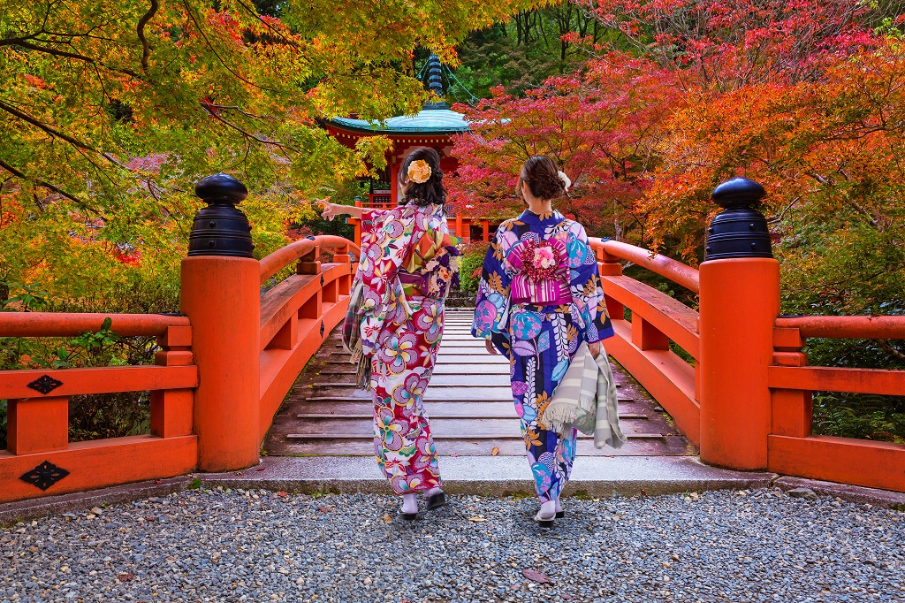
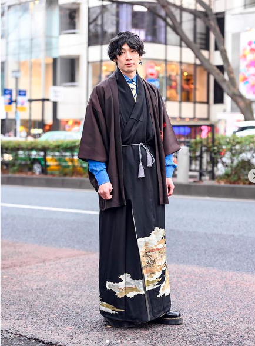

TOKYO
Top attractions in Tokyo
Tokyo, the capital city of Japan and one of the best places to visit in Asia, is also home to the Imperial Palace and the seat of Government and Parliament. Located in East-Central Honshu, the largest of Japan's main islands, this heavily populated city is well worth visiting, and serves as a great base from which to explore other parts of the countr
Central Tokyo

Market for fresh seafood and produce.

District for electronic and otaku goods.

Landscape garden next to Tokyo Dome.

Landscape garden next to Shiodome.

Park on the former grounds of Edo Castle.

Main residence of the Imperial Family.
Northern Tokyo

One of Japan’s oldest and best museums

634 meter tall tower with observation decks.

District with an atmosphere of old Tokyo.

Large temple in the Asakusa district.

Excellent museum about Tokyo’s history.

Beautiful Japanese style landscape garden
Modern Tokyo Fashion
The Japanese did not begin wearing what we know now as traditional wear. In fact, back then, it wasn’t even known as that. The Japanese used to wear skins of animals they hunted back in ancient times. They turned them into simple pieces of clothing. After Japan opened up to other countries, the Japanese took on fabric to make their clothes. It was only during the Middle Ages that they made a unique fashion of their wear. It’s believed that it was this time the “kimono” (着物) we know and love was born. Kimono is literally translated to “thing to wear” because back then it was literally a thing to wear. Over time, the layering of the kimono became popular, especially for the nobles and royalty. Colours came into play. They could represent anything from seasons to the political class. The middle class were often seen in linen-made kimonos. The everyday wear of the Japanese went from the kimono to other simplified forms of it like the “yukata” (浴衣). Now, what was known back then as everyday wear are now formal wear used only during special occasions like weddings.
kimono
As mentioned before, kimono was just “a thing to wear” back in the days. Now, it’s highly regarded and reserved for special and formal occasions including weddings and Coming of Age Day. In the past, the colours represented the political class of the wearer. In the present day, it’s based on one’s age as well as marital status. The traditional wear of the kimono for men is much more simpler than the women. But the general form is still the same. It’s usually made from silk fabrics that are hand-sewn together. The women’s kimono can have up to 12 layers of clothing!
The Famous “Harajuku Fashion”
On to the hot topic for Tokyo fashion, and that is the neighbourhood that pulls in the creative minds. Harajuku has been known for decades now to be the iconic neighbourhood for fashion in Tokyo. Every trend started from here. Harajuku fashion is just a big umbrella term — there are multiple subcultures in it. But let’s not get into every single one of them. Because just like traditional Japanese clothing, the list will go on and on. What’s similar about all of them is that the looks are out of this world! You can only see them in Japan — Harajuku in Tokyo, specifically. And the best part of it all is that no one judges you on your expressive outfits. That’s what this neighbourhood is all about.
Kimono-style aesthetics
Kimono has such a huge impact in the world that it’s even used in modern fashion today. This traditional wear of Japanese culture features a distinct collar as well as the wrap around the waist. That has influenced many modern clothing designs you see on the streets. Not only that, but the prints have also influenced modern fashion as well! There are countless ways the kimono has influenced today’s fashion. The pairing of the wrap with casual clothes seems to be the most popular option.
LIFESTYLE ISSUES
Tokyo is no longer the only city that is highly Westernized. You can find skyscrapers, houses, shops, buildings, malls, streets that look like Western ones almost everywhere in Japan. The same architecture is lined with one area, and it seems to lose its identity and distinguishing characteristics. Wherever you go in that area, you will see the same view made by buildings with many rooms and floors. Perhaps it helps people work effectively, but it ruins the landscape and generates heat air. This kind of tower has been designed by Japanese architects, and to build it requires cutting down many trees or forests. It has become popular and spread around Japan, just as McDonald’s has. Sadly, it seems to me that Japanese people also are very Westernized because they accept this movement as a trend or part of Japanese culture. This is one of the social issues I believe Japan should reconsider. Japan is experiencing a great era, but problems are still ongoing. They cannot ignore it as they hold their own culture.
Having black hair and wearing black suits, every job-seeker looks similar. This is the Japanese way of job hunting. The company usually judges contestants by requiring those who pass through CV to do interviews over and over. In the CV process recruiters very carefully examine who you are, what you can do, and why they should hire you, among other things. In the interview they ask you further what they didn’t get from CV. It is said that companies look for a well-educated person, and whether you can get a job more or less depends on your educational history. This means that the better education you have, the more companies will want to hire you. However, it doesn’t seem to matter what you have learned in college, but which college you went to. It’s so sad to hear that what you have worked on for four years might not help you to get a job in the future. You might find yourself asking, “What, then, is the point of studying so hard?” It is common for freshmen to leave their company within two years because of the difference between their expectations and reality. They would say that “This is not the job that I was hoping for. I can’t take this anymore.” It is true that they should be more patient, but it seems the problem is that during job seeking season, they hadn’t figured out what they really wanted to do.
This issue is linked to job-hunting, which we’ve talked about above. In Japan, you must decide which department you are interested in before you go to college. Making such a decision seems to be especially hard for high school kids, because what you would study at college is very specific and detailed compared to class of high school. Once you get into your department it’s not easy to switch out of it, and you may have to continue studying it despite your lack of interest. I have many friends who are in departments they don’t like. They have often said that “I thought it would help me get a job, but I don’t like studying it.” Or “When I had to choose my department, I didn’t understand what I would be learning and now I’m so bored with it.” They start to get so lazy that they hang out with friends or work part-time instead of attending their classes. As a result, college students in Japan tend to say they study hard just for credit, even though they pay a bunch of money for college. To make it worse, what you’ve studied in college does not matter in job-hunting. How can this be good for students? In the United States of America, liberal arts programs are popular and seem to work well, because students are allowed the opportunity to find their passion. Because of this, some universities in Japan now have a liberal arts program. I believe that students should have enough time to think about what they want to do in college, so that they can get as much out of their college experience as possible.
Japan is now facing a serious problem with its population — it is decreasing because of its aged society. This problem causes many troubles such as a lack of workers, damaged economy, less care for elderly people, less childbirth, local areas becoming abandoned, and so on. There are many reasons to be an aged society, and many people have analyzed it. For instance, the relationship has been changed by SNS and media, Japanese people are getting too busy to have children and family, having less sex, lacking of community, economic recession and so on. Mentally and physically, it seems to be getting difficult to increase the number of young people and the population. One thing we can do about this issue is focus on sex education. Eventually, the birthrate is depending on sexual action between couples. (Of course there are exceptions.) In my experience being with people from outside of Japan, it’s clear that consciousness about sex is varied around the world. What I’ve found out through experience is that Japanese couples don’t often have sex. I’ve heard about statistics about when the first time to have sex is, and they say that more than 50% of people aged over 20 are still virgins. That said, I do not think being a virgin is wrong or shameful in any way. However, seeing this statistic is the reason I’m convinced that there are few sexual actions between Japanese couples. One reason why may be that they fear the possibility of pregnancy. For those who haven’t done it yet, having sex seems risky for both parties involved. But what if they are knowledgeable about sex and how to do it safely? It is often said that sex education in Japan is late compared to that of Western countries. Well, it is very understandable to know that the birthrate of US, UK or other Western countries isn’t that problem, whereas it is in Japan. Thus, recently Japan is working on getting over its aged society by improving sex education through the role model from Europe and U.S.